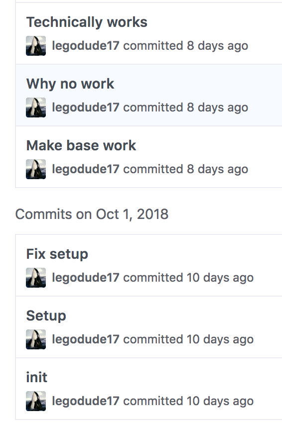

A POL
By Joshua Bennett
Today I will talk about my Self-Direction and my Prototyping/Testing skills.
And how they grew.
And how they grew.
First up:
Self-Direction
My first item of self-direction was creating a plan for the future:
Then, I started working on the prototype.
I tracked my work using a program called git.
I tracked my work using a program called git.

This was the first time I really used git to it's full potential.
I learned the value of keeping track of work and using informative messages.
I learned the value of keeping track of work and using informative messages.
I also ended up having to rewrite a large amount of the original plan.
This taught me the value of not being too attached to specific details of the prototype or plan.
While creating our prototype we were constantly testing it to make sure it worked.
Sometimes we got weird errors, like this one:

I learned how to fix bugs much better.
But the most important lesson I learned..
Was that whatever happens...
Whether you break everything...
Or nothing works...
Or it doesn't quite do what you want...
You need to keep on persisting.